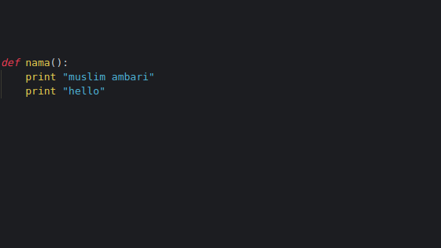
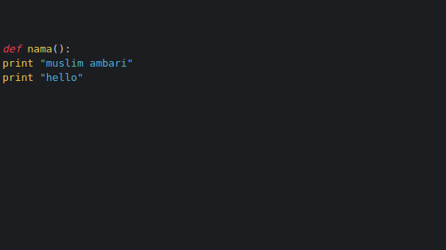

kali ini kita akan belajar cara penulisan syntak yang wajib diketahui di python. 1.Penulisan Statement
Statement adalah sebuah intruksi atau kalimat perintah yang akan dieksekusi oleh komputer.
Penulisan satu statement tidak diakhiri dengan tanda titik-koma.Sedangkan, bila kita ingin menulis lebih
dari satu statement dalam satu baris, maka kita harus memisahnya dengan titik-koma.
tapi menurut beberapa style guide python, tidak dianjurkan menulis lebih dari satu statement dalam satu baris.
Karena akan sulit dibaca.
2.Penulisan String
String adalah teks atau kumpulan dari karakter.String dalam pemrograman biasanya ditulis dengan dibungkus
menggunakan tanda petik.Bisa menggunakan tanda petik tunggal maupun ganda.
3.Penulisan Case
Sintak Python bersifat case sensitive, artinya
namaSaya
Lihat antara variabel
Blok program adalah kumpulan dari beberpaa statement yang digabungkan dalam satu blok.Penulisan
blok program harus ditambahkan tab/spasi

contoh penulisan yang salah

Komentar adalah baris kode yang tidak akan dieksekusi oleh prgram.Komentar digunakan untuk memberikan
informasi tambahan dan untuk menonaktifkan kode.Ada beberapa cara menulis komentar pada pemrograman
Python.
menggunakan tanda pagar (#)
komentar menggunakan tanda pagar (#)Cara ini paling sering digunakan.
menggunakan tanda petik
Selain untuk mengapit string, tanda petik juga dapat digunakan untuk membuat komentar.
menggunakan triple tanda petik
triple tanda petik, sering digunakan untuk menuliskan dokumentasi
oke, sekian pelajaran mengenai syntak di python. dan silahkan pelajari tutorial selanjutnya Lanjut